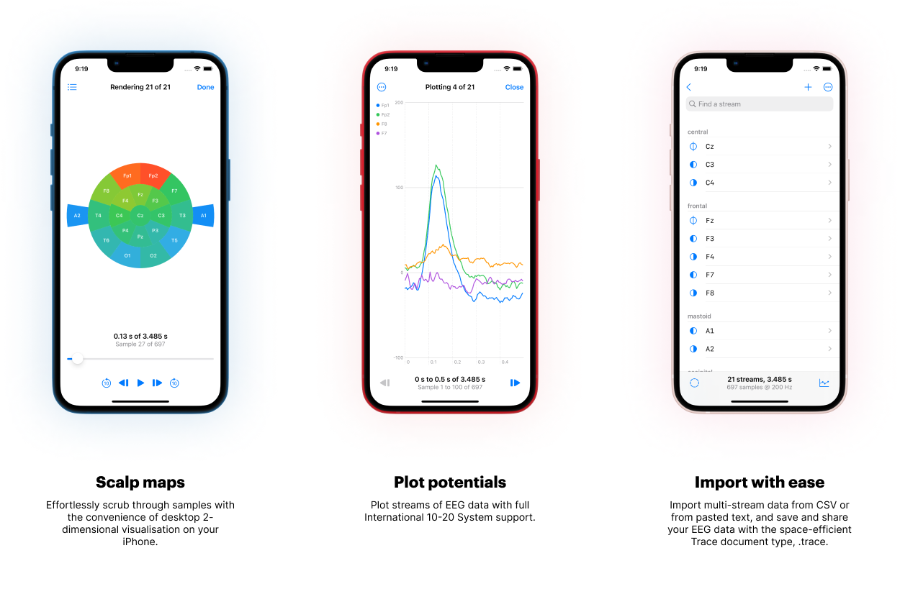
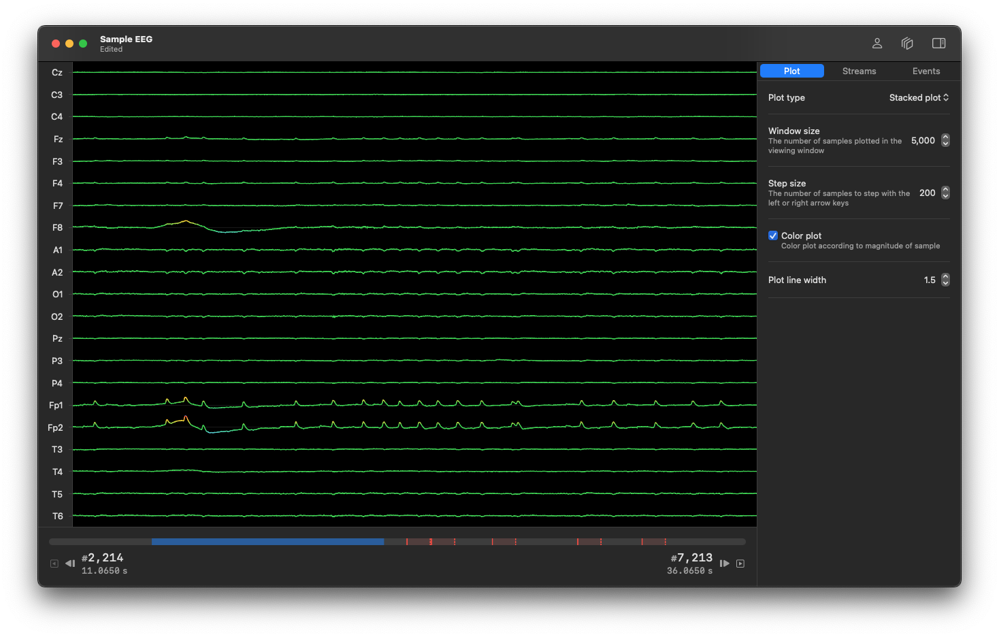
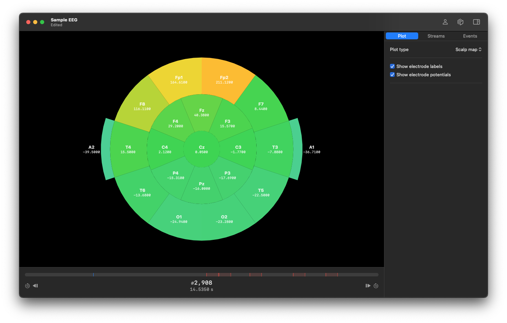

Tahmid Azam (ta549@cam.ac.uk), January 2023
A document-based, multi-platform SwiftUI application for viewing and editing EEG data, aimed at making software for viewing brain imaging data more accessible.

.trace.
Trace supports the International 10-20 system for labelling electrodes. Each electrode label is governed by a prefix and a suffix.
Trace supports the following prefixes:
The suffixes are integer values above 0, with even numbers corresponding to the right lobe of the brain, and odd numbers the left lobe. The number 0 refers to the central line on the scalp between the lobes, and is often written as the letter ‘z’. Examples of electrode labels include ‘Fp1’ or Cz’.
Electrode locations are used to construct the 2-dimensional scalp map visualisation, and the following indexes are supported:
| lobe | suffix |
|---|---|
| prefrontal | 1, 2 |
| frontal | 0 (z), 3, 4, 7, 8 |
| temporal | 3, 4, 5, 6 |
| parietal | 0 (z), 3, 4 |
| occipital | 1, 2 |
| central | 0 (z), 3, 4 |
| mastoid | 1, 2 |
Trace supports data import from .csv files and
from text pasted into the app, and the file parsers have the
following requirements:
| file type | requirements |
|---|---|
.csv |
Each column represents a stream, with the first cell corresponding to the electrode label, and the rest of the cells form the array of samples. Each column (i.e., each stream) must have the same number of samples, and the electrode label must satisfy the format specified above. |
.txt |
Newline-separated values. |
Works on iOS 16 or later or macOS Ventura or later.


Trace.xcodeproj in Xcode 14 or later.
Signing and Capabilities.
⌘R) to your device or a
simulator.